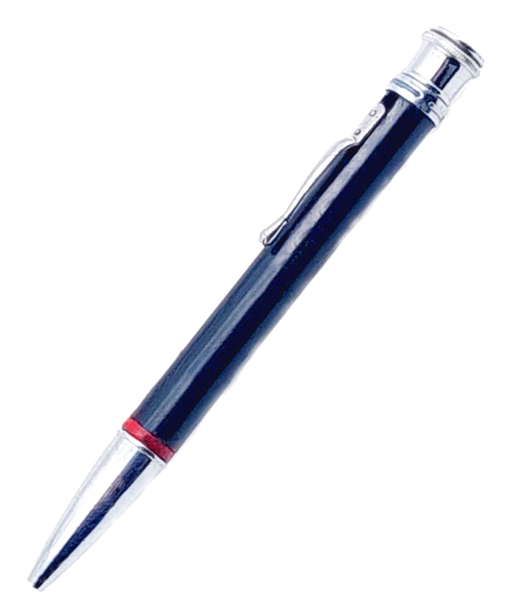

ロットリングの4色ボールペンと色鉛筆
ロットリング 4色ペン 4色ペン
スタンド: 2026 年 3 月 1 日
ロットリングが 1928 年に設立されて間もなく、ワルドマンによって最初の 4 色鉛筆が製造されました。色鉛筆ペン。
その後、4 色ペン、2 色および 4 色の Tikk ペン、ロットリング クワトロ、ロットリング トリオ、ロットリング 3in1 などが続きました。
ロットリングは多色鉛筆を自ら製造したのではなく、ヴァルドマンとフェンド。
「クーリー」について
Waldmann社のロットリングの色鉛筆ペンです。
今日、私たちは一人に理解されますそこにあります～の一種の略語ボールペン。しかし、常にそうであったわけではありません。1929年に、16年ボールペンが商業的に成功する前に、そこにあります-リーペ・ヴェルケ（後のロットリング）からの用語 導入されました:

の触手それはいわゆるスタイログラフであり、ペン先の代わりにチューブを備えた、今日のローラーボール ペンに似た万年筆でした。
さまざまな一連のものが続きましたそこにあります-1930年代全体の製品。
これらの製品の 1 つが、色鉛筆ペン。 1.18mmの太さの芯を交換できる一方向回転機構を備えた4色色鉛筆。


このワルドマン ペンの通常のバージョンとは異なり、このペンにはキャップに刻印があり、黒いボディ、赤いリング (折り畳んだ紙)、 そして取り外し可能なトゥキャップ。
色鉛筆ペンは、この種のペンの中で唯一、踊る芯ホルダーに驚くことができます。その動きは、ケース内部の曲線を示唆しています。

それが何なのか推測してくださいそこにあります時が経ち、1938 年に登録されたインク ペンの「マスコット」が私たちに残されました。


インク ペンは自己紹介します。非常に安価で、「1 週間の無料お試し作業」を提供しています。
いわば勤勉だが安い労働者日雇い労働者実際にはかなり否定的な意味合いを含んでいますが、ここでは多少脚色されています。
今日、それ以外のことをする人はほとんどいないということは、ロットリングの文化的影響を物語っています。ボールペンクリとつながります。
ロットリングを通してのみ彼はそれを受け取ったからですそこにあります筆記具の世界へ。
1950 年代初頭には、色鉛筆でもある 4 色ペンが登場しました。ロットリングの最初の 4 色の Tikk-Kuli も同じ時期に登場しました。 マルチカラーボールペンただし、これは特定のペンのモデルに限定されたものではなく、製品名はさまざまな多色ボールペンに使用されました。